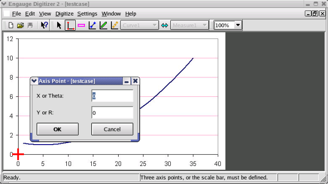
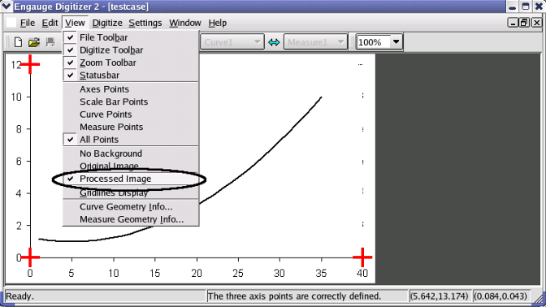
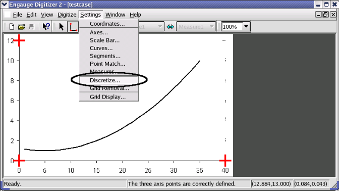
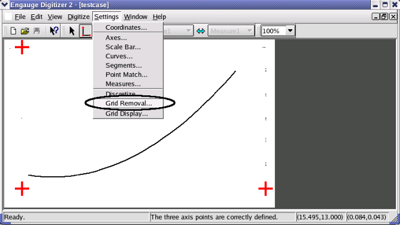
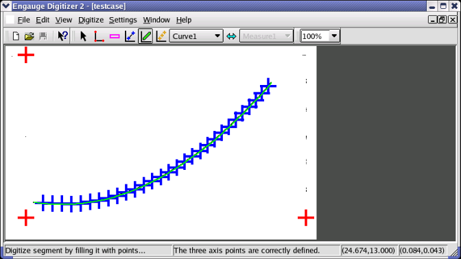

Engauge Digitizer - Automatic Line Graph Tutorial
Engauge Digitizer - Automatic Line Graph Tutorial
Automatically Digitizing A Line Graph Image
The following steps automatically digitize a linear cartesian graph with
one curve./P>
- Import the testcase.png case from the Samples directory, using
File/Import as shown. Not shown are the other methods of importing:
using the "-import" command line option,
by copying and pasting, and by dragging and dropping

- Click on the Axes Point button before entering axes points. These will
define the coordinate system

- Click on one of the axes to add the first axes point, then enter its
graph coordinates

- Click on one of the axes to add the second axes point, then enter its
graph coordinates

- Click on one of the axes to add the third axes point, then enter its
graph coordinates

- View the processed image by selecting the View/Processed Image
menu option.

- Tune the discretize settings using the Settings/Discretize
menu option, so unwanted information in the image is removed.
The dialog that appears is explained at
Discretize Dialog.

- Remove the grid lines from the original image using the
Settings/Grid Removal menu option, so unwanted information in the
image is removed.
The dialog that appears is explained at
Grid Removal Dialog.


- Click on each segment of the curve to add regularly spaced
curve points along that segment. Repeat until points have been
created for all of the segments in the graph.

- Export the curve points into a tabular text file using the
File/Export As menu option as shown. Not shown are the other methods of
exporting the curve points from the
curve geometry window: copying and pasting,
and dragging and dropping